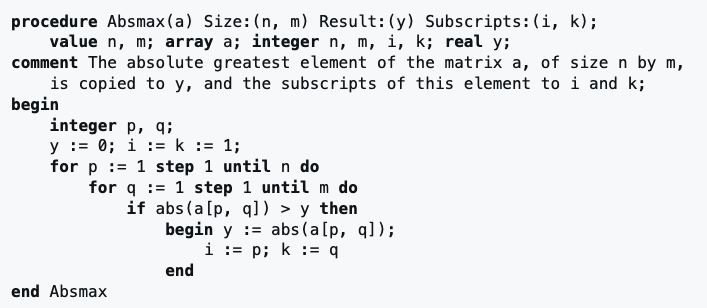

ALGOL

That's him again.
Stands for Algorithmic Language. It was meant to solve issues that FORTRAN had (which were plenty). It introduced the concepts of begin and end blocks, value and reference calls, local variables, then / else expressions, and others. Most modern languages are ALGOL-like.
It was designed by Peter Naur in 1958 and first described in BNF. The language wasn't very commercially successful, but it was important in academia.

An example of ALGOL code.
Go Back